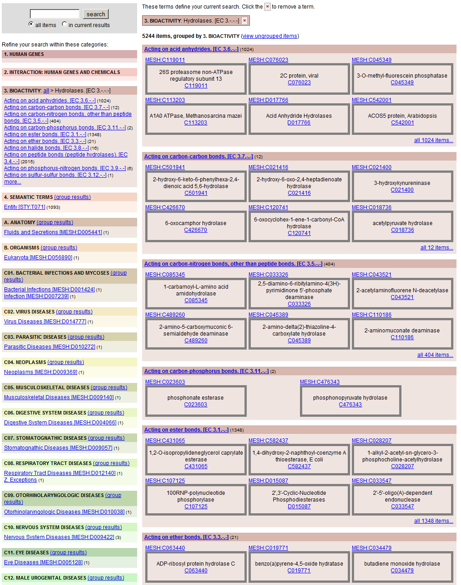
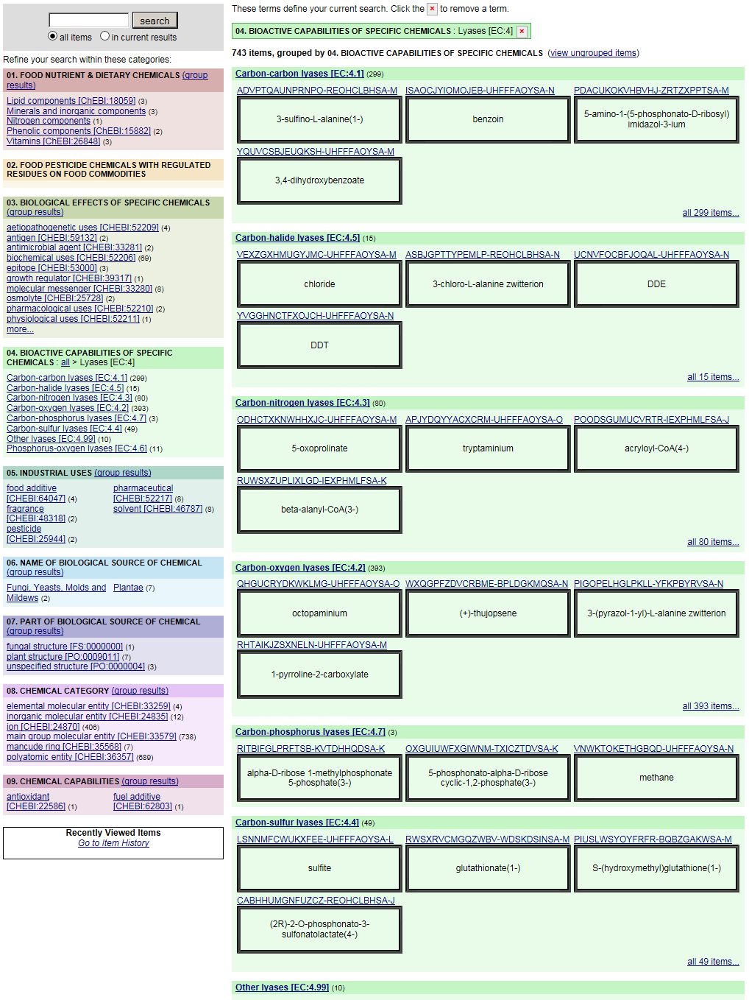
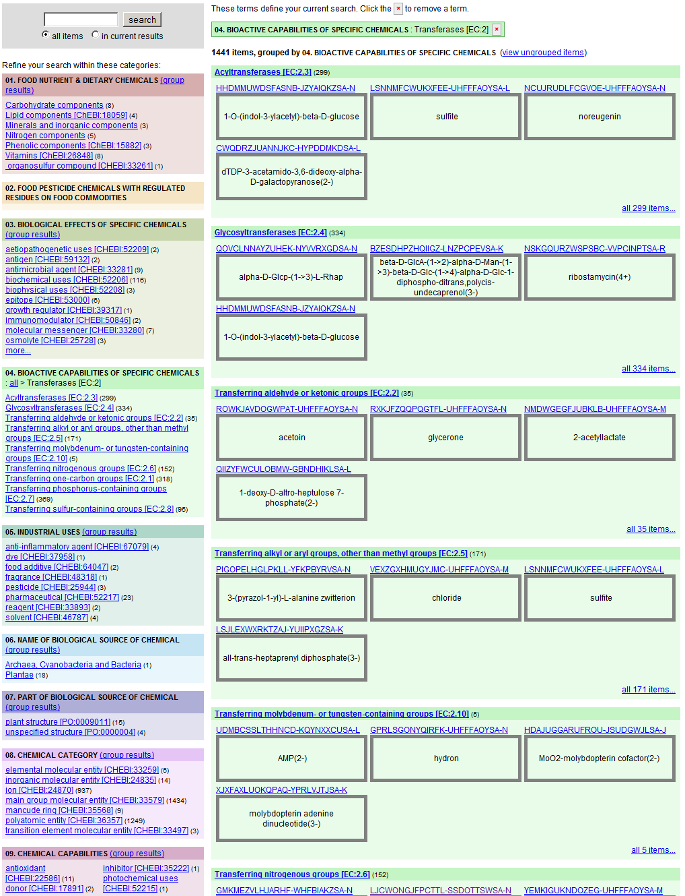

USDA Nutrition Database
Prologue
Words and Formats used in Proposal
Features - Core
Features - Core with Detail
Chemicals
Nutrients
Food Additives
Food Odor and Organoleptic Chemicals
Volatile Compounds in Food
Enzymes in Food
Bioactive Chemicals
Table of Contents
Commodities
Foods
Meals
Nutrition Analysis Methods
Nutrition Mathematics
Data Repository
Technology
Features - FDA Labeling Specifications
Features - Future
Glossary
Terms related to Project
Terms imported from Ontologies
Bibliographies
Ontomatica
Epilogue
USDA Nutrition Database
»
Features - Core with Detail
»
Chemicals
»
Bioactive Chemicals
Bioactive Chemicals
Intro text here
Table of Contents
Hydrolase Activity
Lyase Activity
Transferase Activity
Hydrolase Activity

Lyase Activity

Transferase Activity
